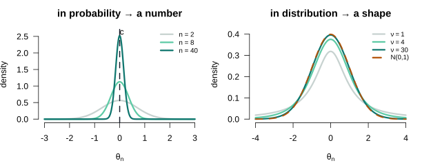
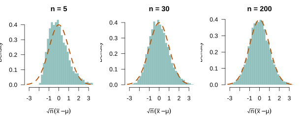

Large Sample Theory: Consistency, Asymptotic Normality, and the Delta Method
Lecture 5
PIMES/UFPE
Where we are
Where this lecture sits
Lecture 4 gave exact, finite-sample results — but at a price: the sampling distribution needed normal disturbances (A6, the normal regression model of Lecture 4), and even unbiasedness is rare outside least squares. This lecture drops both crutches and asks a different question: not what \(\bb\) is for a fixed \(n\), but what happens to it as \(n \to \infty\).
Two limits of finite-sample theory
- Exact results are rare — they need special structure (normal errors).
- Unbiasedness is rare — almost no estimator outside OLS is unbiased.
- More data need not help a biased estimator at all.
Part I · The toolkit
Convergence
Two ways a sequence of estimators can settle down
An estimator is a random variable for each \(n\), so a sequence of them, \(\{\theta_n\}\), is a sequence of random variables. There are two senses in which it can “converge”.
Definition 1 (Convergence in probability and in distribution) \(\theta_n\) converges in probability to \(c\), written \(\theta_n \pto c\) or \(\plim\,\theta_n = c\), if for every \(\delta > 0\), \(\;\Prob(|\theta_n - c| > \delta) \to 0\).
\(\theta_n\) converges in distribution to a random variable \(Z\), written \(\theta_n \dto Z\), if the cdf of \(\theta_n\) converges to that of \(Z\) at every continuity point.
Seeing the two modes of convergence

Figure 1: Two ways a sequence can settle. Left — in probability: the whole distribution of \(\theta_n\) collapses onto a single number \(c\) (this is \(\theta_n\pto c\)). Right — in distribution: the spread does not vanish; instead the shape freezes onto a fixed law (here \(t_\nu\dto\Normal(0,1)\) as \(\nu\) grows). The left panel is convergence in probability; the right, convergence in distribution.
Consistency, named
Applied to an estimator, convergence in probability has a name.
Definition 2 (Consistency) An estimator \(\hat\theta_n\) of a parameter \(\theta\) is consistent if \(\hat\theta_n \pto \theta\) — equivalently, \(\plim\,\hat\theta_n = \theta\). Its sampling distribution collapses onto the true value as \(n \to \infty\).
The law of large numbers
The sample mean finds the truth
Theorem 1 (Weak Law of Large Numbers) If \(x_1, \dots, x_n\) are i.i.d. with \(\E|x| < \infty\) and mean \(\mu\), then the sample mean converges in probability to \(\mu\): \[\bar{x}_n = \frac1n\sum_{i=1}^n x_i \;\pto\; \mu.\]
In the vocabulary just defined, the sample mean is a consistent estimator of \(\mu\).
What a Monte Carlo simulation is
A Monte Carlo simulation approximates a quantity that is hard to derive in closed form by generating many random draws from a known model and computing the quantity on each. Here the target is the sampling distribution of an estimator:
- Fix a DGP whose truth is known — for the right panel below, \(x \sim \text{Exp}(1)\), so \(\mu = 1\).
- Draw one sample of size \(n\); compute the estimator \(\bar{x}\) — one realization.
- Repeat step 2 many times (\(R = 4{,}000\) here), collecting \(R\) values of \(\bar{x}\).
- The histogram of those \(R\) values is the (approximate) sampling distribution at that \(n\).
Redo for growing \(n\) and watch it concentrate on \(\mu\): the LLN, made visible. The simulation illustrates the theorem — it does not prove it.
Seeing the law of large numbers

Figure 2: The law of large numbers, two views. Left: five running averages \(\bar{x}_n\), one per sample, as \(n\) grows — each jagged path settles onto \(\mu\) and stops moving. Right: the sampling distribution of \(\bar{x}_n\) over 4,000 samples, staying centred on \(\mu\) and concentrating as \(n\) grows. The same fact, as a path and as a distribution.
The central limit theorem
After rescaling, everything is normal
Consistency says \(\bar{x}_n \pto \mu\), so \(\bar{x}_n - \mu \pto 0\) — the distribution collapses and, on its own, tells us nothing about shape. The trick is to magnify it by exactly the rate at which it shrinks, \(\sqrt{n}\).
Theorem 2 (Central Limit Theorem (Lindeberg–Lévy)) If \(x_1, \dots, x_n\) are i.i.d. with mean \(\mu\) and finite variance \(\sigma^2\), then \[\sqrt{n}\,(\bar{x}_n - \mu) \;\dto\; \Normal(0, \sigma^2).\]
The limiting law is normal whatever the distribution of \(x\) — the single most useful fact in econometrics, and the reason A6 can be discarded.
Asymptotic normality, named
The CLT is exactly the statement that the sample mean is asymptotically normal.
Definition 3 (Asymptotic normality) An estimator \(\hat\theta_n\) is asymptotically normal if, after centring and \(\sqrt{n}\)-scaling, it converges in distribution to a normal: \[\sqrt{n}\,(\hat\theta_n - \theta) \;\dto\; \Normal(\bzero, \bV).\] The matrix \(\bV\) is its asymptotic variance, written \(\Asyvar[\hat\theta_n] = \bV\).
Collapse and normality are not in conflict
A natural worry: if \(\bar{x}_n \pto \mu\) makes the distribution collapse to a point, how can it also converge to a normal? Because the two statements are about different objects. The raw mean does collapse. Asymptotic normality is about the rescaled deviation \(\sqrt{n}(\bar{x}_n-\mu)\), and the \(\sqrt{n}\) magnification exactly cancels the shrinkage. Read backwards, \[\bar{x}_n \;\approx\; \mu + \tfrac{1}{\sqrt{n}}\,\Normal(0,\sigma^2) \;=\; \Normal\!\big(\mu,\ \tfrac{\sigma^2}{n}\big):\] for every finite \(n\) the mean is approximately normal with width \(\sigma/\sqrt{n}\); as \(n\to\infty\) that width \(\to 0\) (the collapse) while the shape stays normal (the CLT). The CLT is a microscope that magnifies the shrinking bell by exactly \(\sqrt{n}\), so its shape becomes visible.
Seeing the central limit theorem

Figure 3: \(\sqrt{n}(\bar{x}_n-\mu)\) for a strongly skewed variable (exponential). For small \(n\) it inherits the skew; by \(n=200\) it is indistinguishable from the normal curve (dashed) — regardless of the underlying shape.
Combining limits
The continuous mapping theorem, and the algebra of plims
Raw limits are rarely the end — we want limits of functions, sums and products of estimators. The continuous mapping theorem delivers them, and its most-used corollary is a simple algebra.
Theorem 3 (Continuous Mapping Theorem) Let \(g\) be continuous at \(c\). If \(\theta_n \pto c\) then \(g(\theta_n) \pto g(c)\); and if \(\theta_n \dto Z\) then \(g(\theta_n) \dto g(Z)\).
Taking \(g\) to be addition, multiplication or division gives the rule behind every consistency argument in the course:
Corollary 1 (Algebra of probability limits) If \(\theta_n \pto c\) and \(\gamma_n \pto d\), then \[\theta_n + \gamma_n \pto c + d, \qquad \theta_n\gamma_n \pto cd, \qquad \frac{\theta_n}{\gamma_n} \pto \frac{c}{d}\ (d \neq 0).\]
Slutsky: mixing the two modes
The plim algebra combines terms that all converge to numbers. Asymptotic normality needs to combine a term that converges to a normal with one that converges to a constant — a different theorem.
Theorem 4 (Slutsky’s Theorem) If \(\theta_n \dto Z\) and \(\gamma_n \pto c\) (a constant), then \[\theta_n + \gamma_n \dto Z + c, \qquad \gamma_n\theta_n \dto cZ.\]
The Delta Method
The asymptotic distribution of a function of an estimator
Theorem 5 (Delta Method) If \(\sqrt{n}(\btheta_n - \btheta) \dto \Normal(\bzero, \bV)\) and \(f\) is continuously differentiable with Jacobian \(\bGamma = \partial f(\btheta)/\partial\btheta'\), then \[\sqrt{n}\big(f(\btheta_n) - f(\btheta)\big) \;\dto\; \Normal\!\big(\bzero,\ \bGamma\bV\bGamma'\big).\]
On the board: a first-order Taylor expansion \(f(\btheta_n) = f(\btheta) + \bGamma(\btheta_n - \btheta) + \text{h.o.t.}\), the higher-order terms vanish in probability, and the linear term carries the normal through.
Part II · Least squares in large samples
The asymptotic assumptions
What replaces normality
We keep A1–A3 and lean on two assumptions tailored to limits, in place of A4/A6.
Definition 4 (A5a and A2\('\)) A5a (i.i.d. sampling). \(\{(y_i, \mathbf{x}_i)\}_{i=1}^n\) are independent and identically distributed.
A2\('\). \(\;\plim \dfrac{\bX'\bX}{n} = \bQ = \E[\mathbf{x}\mathbf{x}']\), a finite positive-definite matrix.
Consistency of least squares
The one decomposition, again
Everything follows from the sampling-error decomposition of Lecture 4, now divided through by \(n\):
\[\bb = \bbeta + \eqt{a}{\left(\frac{\bX'\bX}{n}\right)^{-1}}\eqt{b}{\left(\frac{\bX'\beps}{n}\right)}\]
Consistency
Theorem 6 (Consistency of least squares) Under A1–A3, A5a and A2\('\), \(\;\plim\,\bb = \bbeta\).
Proof. Take probability limits in the decomposition. Both factors converge in probability, so by the algebra of plims (Corollary 1) the product converges to the product of the limits, \(\bQ^{-1}\cdot\bzero = \bzero\). Hence \(\plim\,\bb = \bbeta + \bzero = \bbeta\). \(\square\)
What consistency buys that unbiasedness did not
- Unbiased: exact centring for every \(n\) — but rare (essentially only OLS).
- Consistent: converges to the truth as \(n \to \infty\) — and it travels.
- Holds where no unbiased estimator exists: IV, GMM, MLE.
- The property the rest of the course actually relies on.
Asymptotic normality
Magnify by √n
The raw estimator collapses onto \(\bbeta\); to recover the shape of its fluctuations we rescale the sampling error by \(\sqrt{n}\):
\[\sqrt{n}\,(\bb - \bbeta) = \left(\frac{\bX'\bX}{n}\right)^{-1}\underbrace{\frac{1}{\sqrt{n}}\bX'\beps}_{\text{a CLT term}}.\]
The left factor \((\bX'\bX/n)^{-1} \pto \bQ^{-1}\) by A2\('\) and the plim algebra. Everything then hinges on the second factor — so, before naming any distribution, we find its variance.
The variance of the score
The CLT term is \(\tfrac{1}{\sqrt n}\bX'\beps = \sqrt{n}\,\bar{\mathbf{w}}\), an average of the i.i.d. vectors \(\mathbf{w}_i = \mathbf{x}_i\varepsilon_i\). By A3 each has mean \(\bzero\), so its variance is just the second moment — and we impose nothing on \(\Var[\varepsilon \mid \bX]\):
\[\bOmega \;\equiv\; \Var[\mathbf{w}_i] \;=\; \E[\mathbf{w}_i\mathbf{w}_i'] \;=\; \E[\varepsilon^2\,\mathbf{x}\mathbf{x}'].\]
This \(\bOmega\) is the general score variance — the same object whether or not the errors are homoskedastic. By the CLT, \(\tfrac{1}{\sqrt n}\bX'\beps \dto \Normal(\bzero, \bOmega)\).
The limiting distribution, in general
Slutsky combines the two factors — a normal times a constant matrix stays normal:
Theorem 7 (Asymptotic normality of least squares) Under A1–A3, A5a and A2\('\) (no homoskedasticity assumed), \[\sqrt{n}\,(\bb - \bbeta) \;\dto\; \Normal\!\big(\bzero,\ \bQ^{-1}\bOmega\,\bQ^{-1}\big), \qquad \bOmega = \E[\varepsilon^2\mathbf{x}\mathbf{x}'].\]
Proof. \(\tfrac1{\sqrt n}\bX'\beps \dto \Normal(\bzero, \bOmega)\) by the CLT and \((\bX'\bX/n)^{-1} \pto \bQ^{-1}\) by A2\('\). By Slutsky the product converges to \(\bQ^{-1}\Normal(\bzero,\bOmega) = \Normal(\bzero, \bQ^{-1}\bOmega\bQ^{-1})\). \(\square\)
The homoskedastic special case
Exactly as in Lecture 4, homoskedasticity is a special case, not the starting point. Under A4, \(\E[\varepsilon^2\mathbf{x}\mathbf{x}'] = \sigma^2\E[\mathbf{x}\mathbf{x}'] = \sigma^2\bQ\), and the sandwich collapses:
Corollary 2 (Homoskedastic limiting distribution) Adding A4, \(\bOmega = \sigma^2\bQ\), so \[\sqrt{n}\,(\bb - \bbeta) \;\dto\; \Normal\!\big(\bzero,\ \sigma^2\bQ^{-1}\big).\]
Seeing asymptotic normality

Figure 4: \(\sqrt{n}(b-\beta)\) for the slope of a regression with strongly non-normal (exponential) errors, over 5,000 samples. Even though the disturbances are not normal, the rescaled estimator converges to the normal curve (dashed) as \(n\) grows — assumption A6 is not needed.
Estimating the asymptotic variance
From the limit to a standard error
In large samples \(\bb \approx \Normal\!\big(\bbeta,\ \tfrac1n\bQ^{-1}\bOmega\bQ^{-1}\big)\). To use it we plug in consistent estimates. The bread \(\bQ\) is estimated by \(\bX'\bX/n\); the filling \(\bOmega = \E[\varepsilon^2\mathbf{x}\mathbf{x}']\) by its sample analogue, residuals in place of errors, \(\tfrac1n\sum_i e_i^2\,\mathbf{x}_i\mathbf{x}_i'\). This is the robust (sandwich) estimator:
\[\widehat{\Asyvar}[\bb] = (\bX'\bX)^{-1}\Big(\textstyle\sum_i e_i^2\,\mathbf{x}_i\mathbf{x}_i'\Big)(\bX'\bX)^{-1}.\]
The homoskedastic short-cut
Under A4 there is a single scalar to estimate: \(\bOmega = \sigma^2\bQ\) needs only \(s^2 = \be'\be/(n-K)\), and the sandwich collapses to \[\widehat{\Asyvar}[\bb] = s^2(\bX'\bX)^{-1}.\]
The robust estimator above is the heteroskedasticity-consistent covariance matrix asserted in Lecture 4 — now derived. HC0–HC4 are the competing estimators of the filling \(\bOmega\) (they differ only in the leverage correction on \(e_i^2\)); the bread \((\bX'\bX)^{-1}\) is common to all. The asymptotic argument Lecture 4 deferred is this whole section.
Beyond Gauss-Markov
Asymptotic efficiency
The Delta Method, applied
For a smooth function of the coefficients, the Delta Method converts Theorem 7 into \[\sqrt{n}\big(f(\bb) - f(\bbeta)\big) \dto \Normal\!\big(\bzero,\ \bGamma\,\bV\,\bGamma'\big), \qquad \bV = \bQ^{-1}\bOmega\bQ^{-1}, \quad \bGamma = \frac{\partial f(\bbeta)}{\partial\bbeta'},\] which is how standard errors are attached to ratios, elasticities and marginal effects throughout the course.
What we have, and where it goes
The scoreboard
| Finite sample (Lecture 4) | Large sample (Lecture 5) |
|---|---|
| Unbiased: \(\E[\bb\mid\bX] = \bbeta\) | Consistent: \(\plim\,\bb = \bbeta\) |
| Exact normal only under A6 | Asymptotically normal without A6 |
| Sandwich variance (asserted) | Sandwich variance (derived here) |
| Rare outside OLS | Travels to IV, GMM, MLE |
Reading
Sources
| Hansen | Chapter 5 (the toolkit: convergence, WLLN, CLT, Delta Method) and Chapter 6 (asymptotic theory for least squares) |
| Greene | Chapter 4 (asymptotic properties) and Appendix D (large-sample distribution theory) |